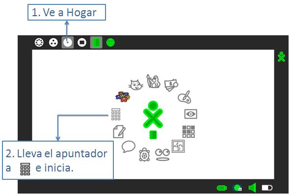
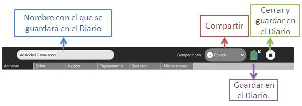
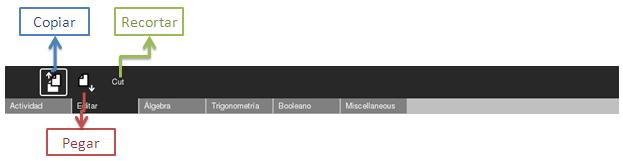
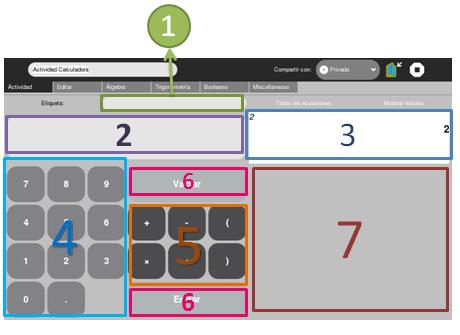

Computadora
Actividades
Calculadora
Calculadora es una actividad que sirve para realizar cálculos, como por ejemplo: sumas, restas, multiplicaciones y divisiones. Usa esta actividad cuando vayas a hacer muchos cálculos.
¿Cómo abrirlo?




1. Etiqueta: Aquí le pones un nombre a la operación que vas a hacer, de manera que podrás reconocerla en la lista de operaciones que haz realizado.
2. Estado actual: Acá se muestra que operaciones estás poniendo.
3. Operación hecha: En este cuadro se presenta la operación que acabo de realiza con su resultado, junto con su etiqueta.
4. Números
5. Operadores
6. Vaciar: Limpiar el cuadro del estado actual (2). Entrar: Presentar el resultado de realizar las operaciones del campo Estado actual(2) en el campo de Operación hecha (3).
7. Historial: Muestra todos los cálculos que haz hecho.